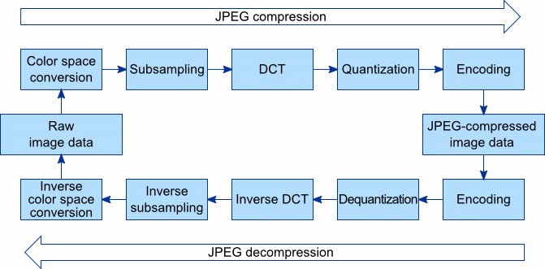

JPEG Compression Overview

JPEG Encoder
1. Forward DCT
2. Quantization
3. Lossless Encoder
DCT (Discrete Cosine Transform)
Images represented as pixels
If we visualize the pixels of an image as a signal it will allow us to access frequency components within an image. Higher frequency components communicate with rapid change in values of pixels while for lower frequency there is a smooth curve formed as a signal.
So JPEG removes less important and less common higher frequency components from an image for the sake of compression.
To gain this information of higher and lower frequencies we use DCT.
Forward DCT
Initially in forward DCT, each pixel value is subtracted by 128 to make the range from -128 to +127.
If we form a graph of 8 pixels represented by 8 points we can show that as a sum of sample points from cosine waves. This is the representation by DCT.
The DCT takes an input of sample points from our original signal and gives us an output of the same size which is
then taken as coefficients which represents the weights of cosine waves of different frequencies.
The wave of 8 inputs is used to represent a row of gradually decreasing pixel values.
The magnitude of the change and the direction of the change can be seen in both the original cosine wave and the DCT coefficient.
Zero frequency cosine wave is just a constant signal which gives the measurements of overall brightness of a set of pixels which means brighter images will have a larger zero coefficient compared to darker or less bright images.
Hence the core DCT breaks down how all the 8 patterns contribute to the image as all the sum of these 8 cosine waves represents all the possible combinations of 8 pixel values.
2D DCT
For each 8x8 block, the 2D DCT is applied, transforming the pixel values into a set of frequency coefficients. The resulting coefficients represent different spatial frequencies within the block, with the top-left corner representing the average value of the block and the other coefficients representing variations in the block.
Mathematically, the 2D DCT is defined as follows:

Energy Compaction
Energy Compaction is what allows us to compress images while still retaining high visual quality.
Picking out a random 8 by 8 block from the image and mapping out the magnitude of the coefficients we notice how larger values are in the upper left section corresponding to lower frequency components. Any other 8 by 8 block from the image has the same property. This property is energy compaction.
This happens after DCT as a few larger values get concentrated in a low frequency coefficient.
As we add DCT coefficients slowly the quality of the image matches the original. Till we get to 25% of DCT coefficients, it looks the same as the original image. Almost all the blocks consist of low frequency components and as we are generally less sensitive to high frequency details confirms the working of JPEG compression but we still need to remove high frequency components.
Quantization
How can we deliberately get rid of information in order to compress an image?
For that we need to remove high frequency components.
How do we remove high frequency components?
This is gained through quantization.Mathematically, the 2D DCT is defined as follows:
For a 8 by 8 matrix of frequency coefficients given by DCT we divide each element of the matrix by a scalar matrix and then round it to an integer.
The scalar matrix which is a quantization table is provided by the JPEG standard from visual experiments which defines the quality of JPEG compression.
This quantization table is available for both luma and chroma channels.
In the scalar there are larger values at the bottom-right so in the quantized matrix it will have zeros in the higher frequency components.
Run Length Encoding
Run-length encoding is a form of lossless data compression in which runs of data (sequences in which the same data value occurs in many consecutive data elements) are stored as a single data value and count, rather than as the original run.
This is most useful on data that contains many such runs, such as image compression.
Also one of the main reasons to use RLE is, after quantization we end up with a lot of zeros in the high frequency. We rearrange the coefficients in a zig-zag order from top right to bottom left order to exploit redundancy, and store the information more efficiently.
Huffman Encoding
While the run-length encoding (RLE) technique efficiently represents consecutive zeros, the resulting data still contains variable-length codes, which are not optimal for further compression.
To address this, Huffman coding is employed to convert the variable-length codes into fixed-length codes known as Huffman codes.
Huffman code is used as more frequent data can be used with fewer bits. Some triplet values are more frequent than others making it easy to compress. JPEG encodes the signs of coefficients as well as the 8x8 blocks. It even encodes the top-left coefficients separate from the other coefficients as after decoding those values stays somewhat the same as that of the original matrix of both luma and chroma channels.
JPEG Decoder
1. Loseless Decoder
2. Dequantizer
3. Inverse DCT
Lossless Decoder
JPEG decoder uses all the Huffman code files to get back all the quantized DCT coefficients that were encoded by Huffman encoding.
Dequantization
For decoding, we multiply the matrix of frequency coefficients with the same scalar matrix that we divided by our matrix of frequency coefficients, element by element to gain the final coefficient matrix which will be different from the original matrix.
Here there is intentional loss of information but lower frequency components are retained.
Inverse DCT
The invertibility of DCT also plays a role in the JPEG compression. The signals converted to coefficient representation of weights associated with cosine waves can be reversed as signals can be formed from the coefficient representation. This is the inverse DCT where we get back the exact signal. Due to the orthogonality the inverse is just the transpose of the original matrix.
Inverse DCT sums up the weighted combination of cosine waves and gets the original signal back.
References taken from:
https://www.baeldung.com/cs/jpeg-compression
https://en.wikipedia.org/wiki/Run-length_encoding
https://fairyonice.github.io/2D-DCT.html
Images taken from:
graphicsmill.com
https://www.youtube.com/watch?v=0me3guauqOU
https://www.youtube.com/watch?v=fkz2-JVaYDk